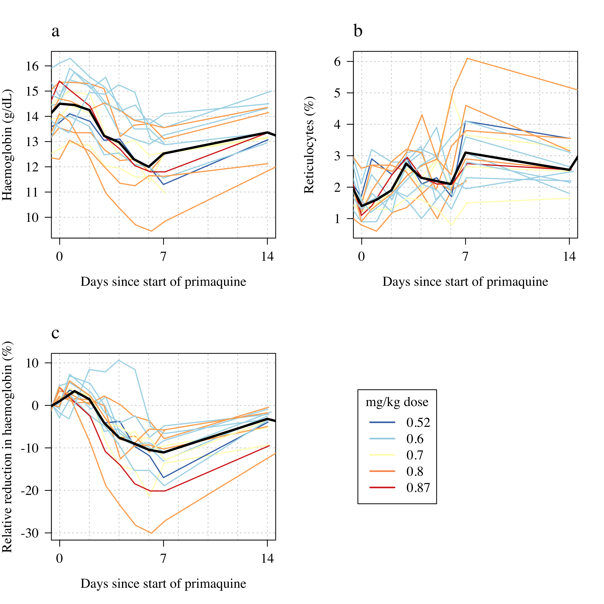

Primaquine challenge studies
Load all data
Endpoints definitions
Absolute falls in ascending dose regimens: 0% 50% 100%
2.1000 3.7125 5.8750 Relative falls in ascending dose regimens: 0% 50% 100%
15.21739 26.42020 40.03407 single dose
Absolute falls in single dose: 0% 50% 100%
0.8999996 1.6000000 3.8000000 Relative falls in single dose: 0% 50% 100%
6.428569 11.929700 28.679244 Exposure definitions
Table 1
Part 1 - ascending dose
G6PD variants:
Aures Canton Chinese-4 Mahidol Orissa Union Viangchan
1 4 1 4 1 1 12 G6PD enzyme activity: 0% 50% 100%
0.00 0.15 1.90 Age (years): 0% 50% 100%
18 32 55 Weight (kg): 0% 50% 100%
45.9 64.3 85.6 Baseline Hb: 0% 50% 100%
11.8 14.3 15.8 Baseline retics: 0% 50% 100%
1.2 2.5 4.4
PQ-mrdt01-018 PQ-mrdt01-011 PQ-mrdt01-014 PQ-mrdt01-007 PQ-mrdt01-012
3 11 11 15 15
PQ-mrdt01-020 PQ-mrdt01-021 PQ-mrdt01-022 PQ-mrdt01-023 PQ-mrdt01-024
15 15 15 15 15
PQ-mrdt01-010 PQ-mrdt01-015 PQ-mrdt01-016 PQ-mrdt01-017 PQ-mrdt01-019
16 16 16 16 16
PQ-mrdt01-013 PQ-mrdt01-001 PQ-mrdt01-002 PQ-mrdt01-003 PQ-mrdt01-004
17 20 20 20 20
PQ-mrdt01-005 PQ-mrdt01-006 PQ-mrdt01-008 PQ-mrdt01-009
20 20 20 20 Day of nadir: 0% 50% 100%
11 16 23 Day of peak retics: 0% 50% 100%
11 16 20 G6PD variants:
Aures Canton Kaiping Mahidol Orissa Union Viangchan
1 3 1 2 1 2 6 G6PD enzyme activity:Age (years): 0% 50% 100%
20 34 58 Weight (kg): 0% 50% 100%
51.60 64.05 86.10 Baseline Hb: 0% 50% 100%
12.4 14.0 15.9 Baseline retics: 0% 50% 100%
1.1 2.4 3.5 Part 1

Part 2

Dose response part 1
Total day 10 dose (mg/kg) 0% 50% 100%
1.4 2.3 3.0 0% 50% 100%
2.1 3.7 5.9 0% 50% 100%
15.2 26.4 40.0
Call:
lm(formula = Max_Hb_decrease_Abs ~ day10_PQ_cum, data = Ascending_base_dat)
Residuals:
Min 1Q Median 3Q Max
-1.3954 -0.6220 0.1555 0.5136 1.6333
Coefficients:
Estimate Std. Error t value Pr(>|t|)
(Intercept) 1.0689 0.8063 1.326 0.1992
day10_PQ_cum 1.2853 0.3599 3.571 0.0018 **
---
Signif. codes: 0 '***' 0.001 '**' 0.01 '*' 0.05 '.' 0.1 ' ' 1
Residual standard error: 0.8629 on 21 degrees of freedom
(1 observation deleted due to missingness)
Multiple R-squared: 0.3778, Adjusted R-squared: 0.3482
F-statistic: 12.75 on 1 and 21 DF, p-value: 0.001802
Call:
lm(formula = Max_Hb_decrease_Rel ~ day10_PQ_cum, data = Ascending_base_dat)
Residuals:
Min 1Q Median 3Q Max
-8.141 -3.278 -0.482 2.622 9.538
Coefficients:
Estimate Std. Error t value Pr(>|t|)
(Intercept) 7.528 4.540 1.658 0.112194
day10_PQ_cum 8.874 2.027 4.378 0.000263 ***
---
Signif. codes: 0 '***' 0.001 '**' 0.01 '*' 0.05 '.' 0.1 ' ' 1
Residual standard error: 4.859 on 21 degrees of freedom
(1 observation deleted due to missingness)
Multiple R-squared: 0.4772, Adjusted R-squared: 0.4523
F-statistic: 19.17 on 1 and 21 DF, p-value: 0.0002629
Call:
lm(formula = Daily_5_to_10 ~ day10_PQ_cum, data = Ascending_base_dat)
Residuals:
Min 1Q Median 3Q Max
-0.237366 -0.076008 -0.006131 0.102148 0.264907
Coefficients:
Estimate Std. Error t value Pr(>|t|)
(Intercept) 0.25998 0.12552 2.071 0.0509 .
day10_PQ_cum 0.04889 0.05603 0.873 0.3928
---
Signif. codes: 0 '***' 0.001 '**' 0.01 '*' 0.05 '.' 0.1 ' ' 1
Residual standard error: 0.1343 on 21 degrees of freedom
(1 observation deleted due to missingness)
Multiple R-squared: 0.03498, Adjusted R-squared: -0.01097
F-statistic: 0.7613 on 1 and 21 DF, p-value: 0.3928
Dose response part 2
single dose
Call:
lm(formula = Max_Hb_decrease_Abs ~ PQ_mg_kg, data = PQ45_base)
Residuals:
Min 1Q Median 3Q Max
-1.1024 -0.6294 -0.2370 0.5721 1.7909
Coefficients:
Estimate Std. Error t value Pr(>|t|)
(Intercept) 1.011 1.417 0.713 0.487
PQ_mg_kg 1.300 2.028 0.641 0.532
Residual standard error: 0.8461 on 14 degrees of freedom
Multiple R-squared: 0.02852, Adjusted R-squared: -0.04087
F-statistic: 0.4111 on 1 and 14 DF, p-value: 0.5318
Call:
lm(formula = Max_Hb_decrease_Rel ~ PQ_mg_kg, data = PQ45_base)
Residuals:
Min 1Q Median 3Q Max
-7.962 -4.432 -1.427 3.569 14.229
Coefficients:
Estimate Std. Error t value Pr(>|t|)
(Intercept) 5.606 9.897 0.566 0.58
PQ_mg_kg 11.516 14.159 0.813 0.43
Residual standard error: 5.908 on 14 degrees of freedom
Multiple R-squared: 0.04512, Adjusted R-squared: -0.02308
F-statistic: 0.6616 on 1 and 14 DF, p-value: 0.4296
Call:
lm(formula = Daily_0_to_7 ~ PQ_mg_kg, data = PQ45_base)
Residuals:
Min 1Q Median 3Q Max
-0.19699 -0.10683 -0.01836 0.09944 0.32224
Coefficients:
Estimate Std. Error t value Pr(>|t|)
(Intercept) 0.1246 0.2601 0.479 0.639
PQ_mg_kg 0.2793 0.3721 0.751 0.465
Residual standard error: 0.1553 on 14 degrees of freedom
Multiple R-squared: 0.03868, Adjusted R-squared: -0.02998
F-statistic: 0.5634 on 1 and 14 DF, p-value: 0.4653

Individual data


patients who got both
[1] TRUE


drop in haemoglobin once PQ was stopped